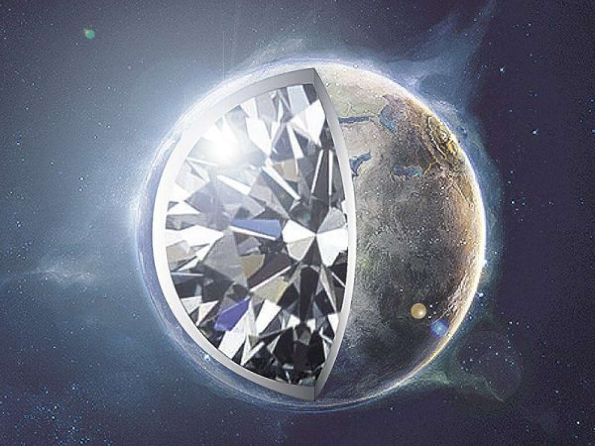

Планета 55 Cancri e практически полностью сделана из кристаллического алмаза.
Когда-то она разрушилась, но углеродное ядро осталось и под действием высокой температуры и гигантского давления оно превратилось в один большой алмаз.
Правда, с одним минусом — температурой 1648 градусов по Цельсию на поверхности.
В то время как Земля покрыта водой и изобилует кислородом, эта планета состоит из графита, алмаза и нескольких силикатов.
Этот драгоценный камень в два раза больше Земли и в восемь раз тяжелее. Обладатель такого ресурса стал бы самым богатым организмом во Вселенной.
Если бы, конечно, смог добыть алмазы из недр 55 Cancri e.
